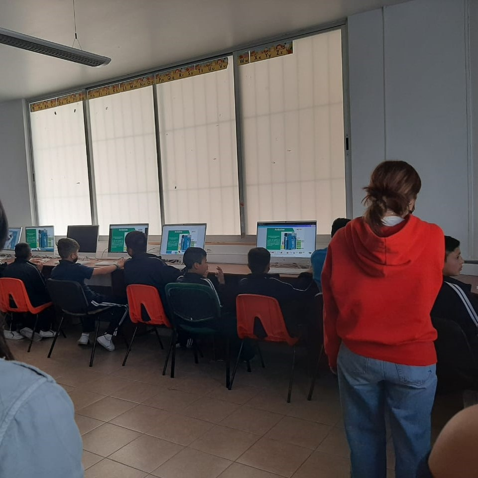

Evidencias



Durante el primer mes del 2023 me informaron que el proyecto que ya había realizado con un grupo de estudiantes de ingeniería en julio del año pasado cuyo propósito era enseñar robótica a través de LEGO se volvería a realizar pero en esta ocasión usando la plataforma Arduino en una interfaz de programación en bloques para facilitar el aprendizaje en lugar de directamente ponerlos a escribir código en C. Entonces decidí volverme a aventurar como tutor de 5 chicas y 5 chicos para enseñarles todo lo que necesitaban saber para programar un robot que pudiera evitar los obstáculos que se le presentaban en su camino.
En este proyecto el reto volvió a ser el mismo que en su primera edición ya que la parte más dificil no fue transmitir el conocimiento técnico, sino que el reto real era encontrar las maneras de comunicar los temas sin que les pareciera aburrido a los niños.